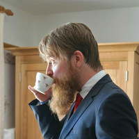

I've been a software engineer since 2009, worked in various agile projects & got a taste for quality assurance. Today I'm a quality engineer at REWE digital.
Technically responsible (§ 5 TMG)
Address
Michael KutzCorkstraße 19
51103 Köln
Telephone
0221/64000499Responsible for content (§ 55 Abs. 2 RStV)
Address
Michael KutzCorkstraße 19
51103 Köln